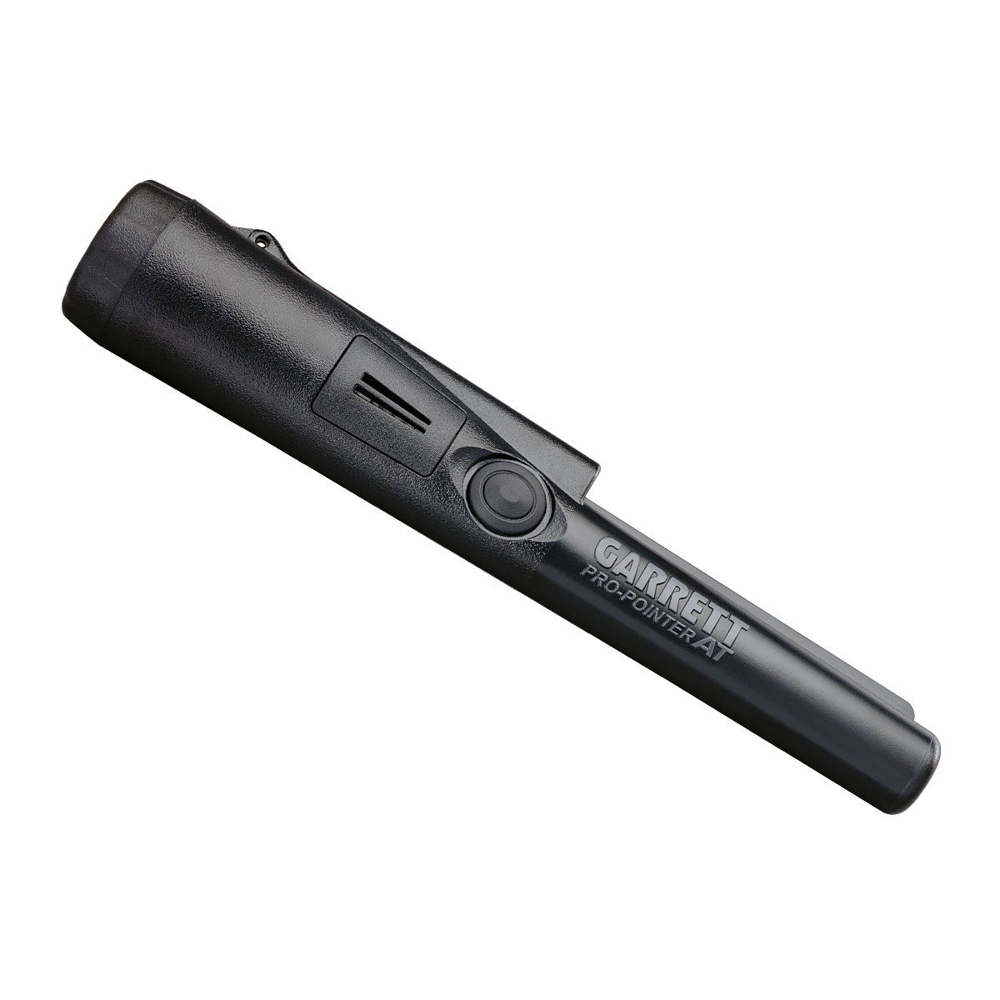
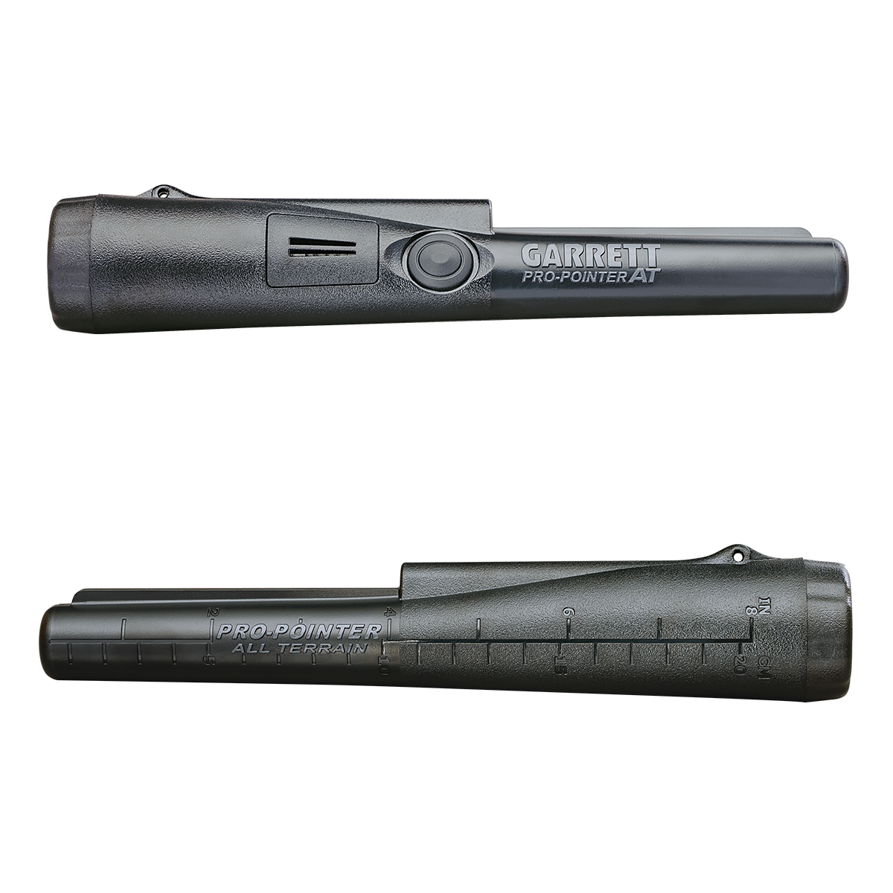
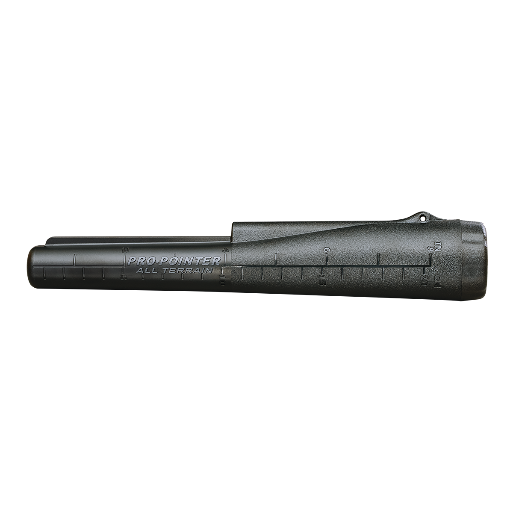
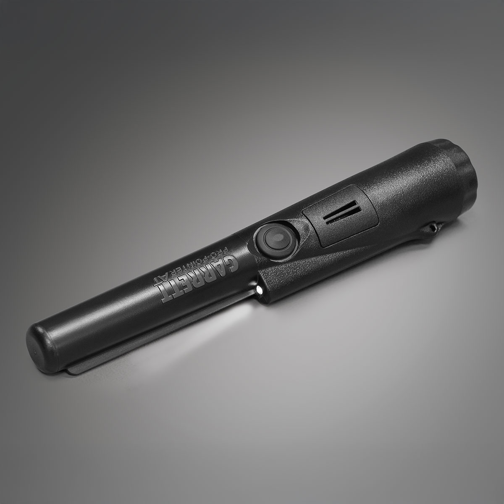
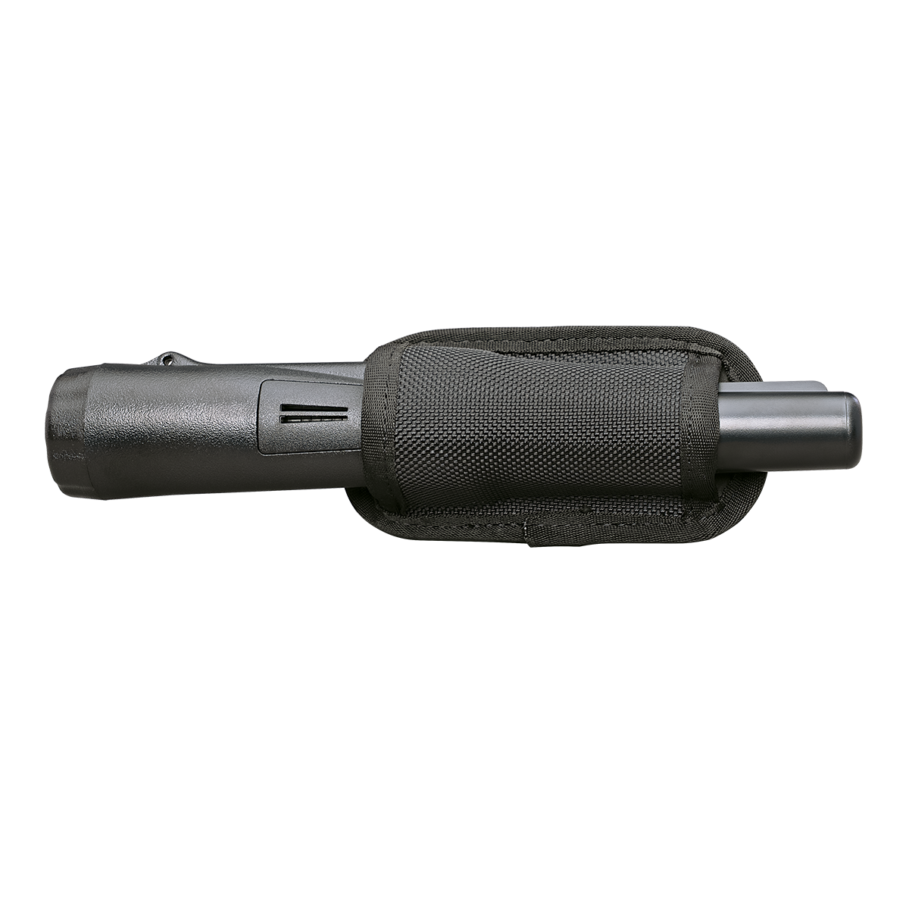
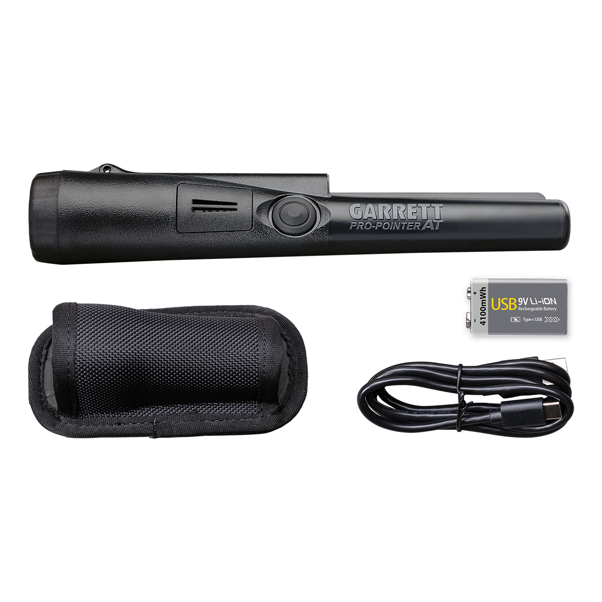
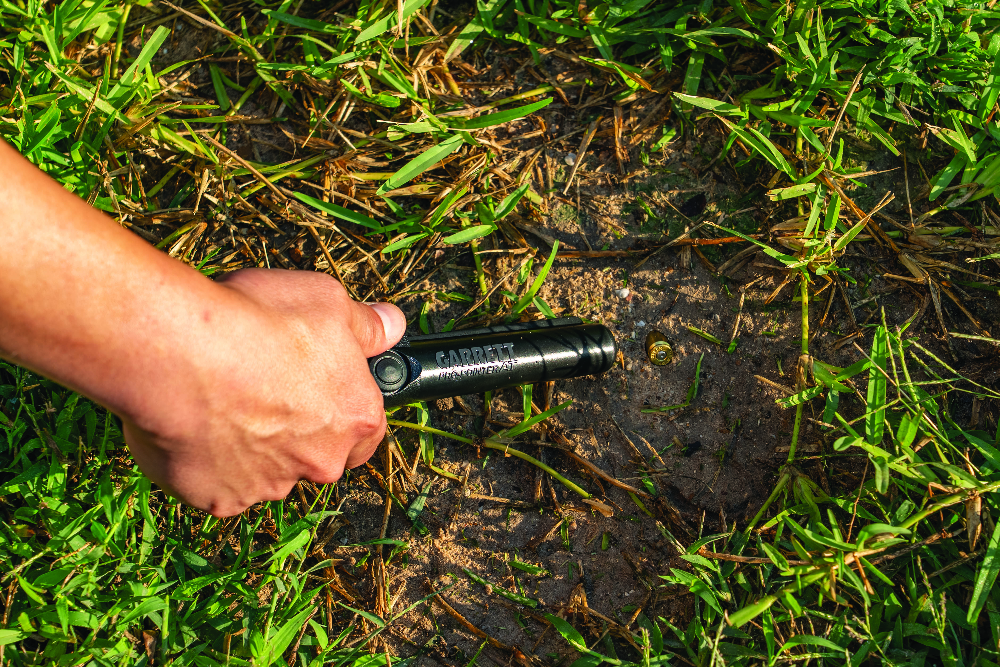

Ampliar







Temporariamente Indisponível
USB-C Recarregável
Edição Especial
Garrett
PRO-Pointer AT Blackline Edition
A edição tática premium do pinpointer mais confiável da Garrett — com acabamento all-black exclusivo, carregamento USB-C recarregável e a mesma tecnologia AT que conquistou o mundo.
Bateria: Recarregável via USB-C (sem pilhas)
Resistência: Submersível até 3 metros (IPX8)
Alerta: Sonoro proporcional + vibração silenciosa
LED: Iluminação de alta potência integrada
Acabamento: All-black — edição tática exclusiva
Produto Temporariamente Indisponível
Cadastre-se para ser notificado quando o produto estiver disponível